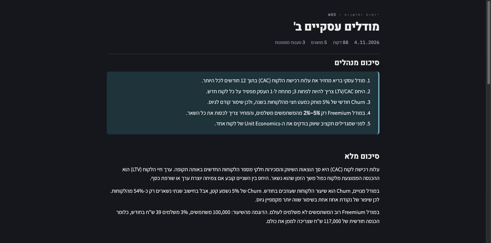
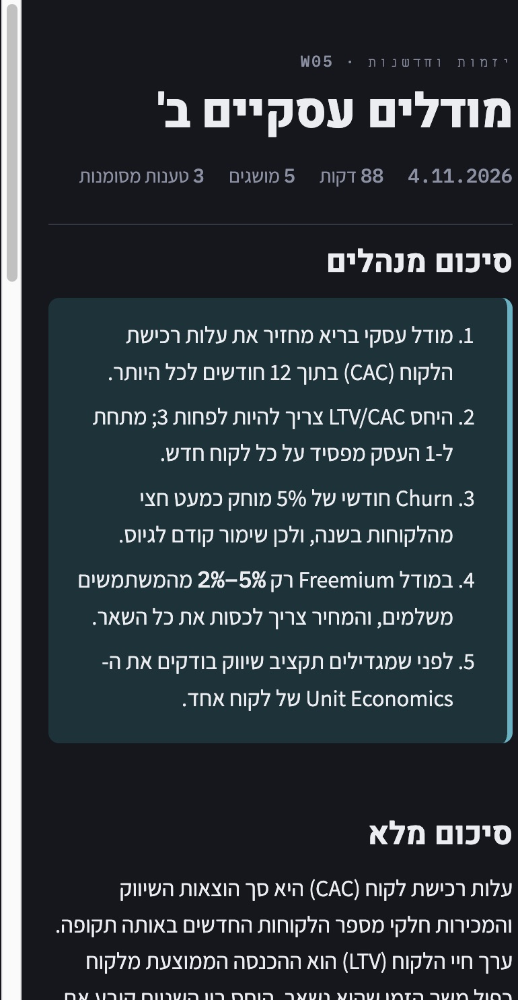

M1 הפכה הקלטה לשורות במסד. M2 הופכת את השורות למשהו שאפשר לקרוא: Digest לכל הרצאה, תמיד באותם תשעה פרקים ובאותו סדר, שנכתב כקבצים לתיקיית הקורס. בנוסף, מעכשיו אפשר להריץ גם תמלול מיוצא (קובץ .vtt של זום או JSON של MacWhisper) באותה צנרת, בלי אודיו.
TranscriptSource קורא קובץ .vtt או JSON, מקבץ את השורות לקטעים של כ-45 שניות, וכותב כל קטע לדיסק. משם הצנרת ממשיכה כרגיל, בלי לדעת שלא היה אודיו.output/digest.py — סיכום מנהלים וסיכום מלא נכתבים על ידי Gemma; שאר הפרקים הם תבניות על המסד.FolderSink כותב לכל הרצאה digest.md, digest.html, transcript.txt ו-claims.json, ומעדכן index.md של הקורס.replay מסתיים עכשיו ב-Digest; digest בונה מחדש Digest להרצאה קיימת.באפיון, Gemma מקבל את כל תקצירי הקטעים בבת אחת. מדדתי: שורת תקציר עולה כ-38 טוקנים, ו-Gemma רץ עם חלון של 4,096 טוקנים. הרצאה של שעה וחצי לא נכנסת. לכן ה-Digest נבנה בשני שלבים (D-M2-2):
התמלול עצמו לא נקרא שוב, ולכן הזמן כמעט לא תלוי באורך ההרצאה.
| מה הורץ | קטעים | עיבוד קטע, p95 | בלוקים | זמן ה-Digest |
|---|---|---|---|---|
| התרגול המלא של 19/6, מאודיו (83.2 דקות) | 115 | 17.92 שנ' | 3 | 94.33 שנ' |
ההרצאה של 7/6, מה-.vtt (251 דקות) | 259 | 12.93 שנ' | 5 | 119.33 שנ' |
הצילומים הם של הרצאה מומצאת (הדוגמה מהאפיון). Digest אמיתי הוא חומר של הקורס, ולא נכנס לריפו הציבורי (D-M2-8).


ב-M1 ראינו שהחילוץ מוציא כמעט רק מושגים. ניסיתי שלוש גרסאות של פרומפט החילוץ על אותם תמלולים בדיוק: 20 קטעים מההרצאה של 7/6.
| גרסה | טענות | הדגשות | שאלות | תקצירים שמספרים על המרצה | זמן, p95 |
|---|---|---|---|---|---|
extract_v0 | 13 | 0 | 6 | 20 | 10.61 שנ' |
extract_v1 | 0 | 1 | 1 | 1 | 8.96 שנ' |
extract_v2 | 3 | 0 | 0 | 15 | 10.56 שנ' |
extract_v3 | 9 | 3 | 3 | 20 | 12.42 שנ' |
v1 נפסלה: היא העלימה את כל הטענות, כולל עובדות נכונות על Python שכדאי לבדוק, והתקצירים נעשו כלליים.v2 נפסלה: הסיפור על המרצה חזר, ונשארו שלוש טענות בלבד.v3 בשימוש (D-M2-4): הגרסה המקורית עם שינוי אחד, כלל ההדגשות. הלקח: שיניתי ב-v1 יותר מדי דברים בבת אחת.המבנה והזמנים עומדים בשער. התוכן עדיין לא במקום שהייתי רוצה. אלה המספרים של התרגול המלא:
| פרק | כמה יצא | הבעיה |
|---|---|---|
| מושגים | 77 | יותר מדי. אותו מושג מופיע בכמה כתיבים (Git, גיט), כי התמלול כותב אנגלית באותיות עבריות. הזיכרון של M3 אמור לאחד. |
| ★ למבחן | 29 | יותר מדי בשביל פרק שאמור להיות קצר. המרצה אומרת "חשוב" הרבה. |
| משימות | 13 | רובן לא מטלות, אלא דברים שנעשו בכיתה. |
| טענות מסומנות | 33 | הרבה מהן ענייני מנהלה ("יונתן אחראי על התרגיל") ולא עובדות לבדיקה. |
| סיכום מלא | 681 מילים | מעל היעד של 400–600, ו-7 משפטים עדיין מספרים על המרצה. |
ההמלצה שלי: את הטענות לכוון ב-M4 מול הבנצ'מרק שתתייג, ולא לפי הקריאה שלי. לגבי ההדגשות והמשימות יש שאלה אליך למטה.
runs/courses. הקוד מסרב ליצור תיקייה שמתחזה ל-Drive. אחרי ההתקנה משנים את COURSES_ROOT בלבד.ועוד חמש קטנות: איך מדלגים על התמלול בלי שהצנרת תדע (D-M2-1), גרסה 2 של המסד עם העברה אוטומטית (D-M2-3), הפרומפטים שבשימוש (D-M2-4, D-M2-5), וצילומים של הרצאה מומצאת (D-M2-8).
flashcards.tsv (סולם הוויתורים) ו-course.html (M5).digest.md טווח מספרים עדיין יכול להתהפך בתצוגה; תיקנתי רק ב-digest.html.מה אני צריך ממך: לקרוא את הדוח ולאשר את המיזוג. ושאלה אחת: האם להגביל את פרק ★ לסימנים חזקים בלבד ("זה במבחן", "תזכרו"), או להשאיר כל "חשוב" ולתת לך לסנן?